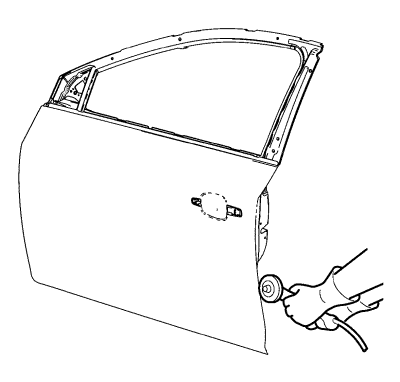
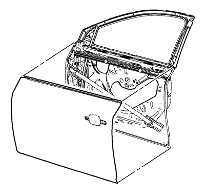
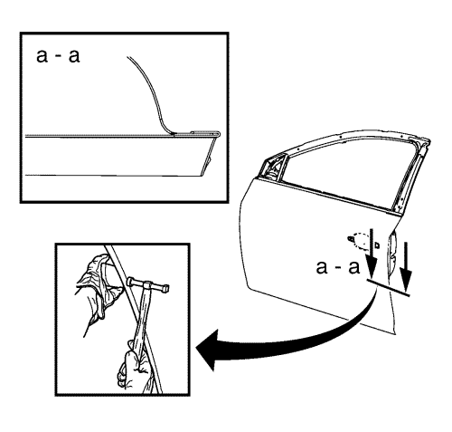

Sustitución de la moldura externa de la puerta lateral delantera — Soldadura MAG
Herramientas especiales
| • | BO-6396 Tenazas de rebordeado |
| • | BO-6392 Juego de herramientas de rebordeado |
Si desea informarse sobre herramientas regionales equivalentes, consultar Herramientas especiales
Nota: De acuerdo con las distintas garantías de corrosión, únicamente están permitidas las técnicas de ensamblaje obligatorias de acuerdo con la normativa a nivel regional.
Procedimiento de desmontaje
Advertencia: Consulte Advertencia de manejo de vidrio y chapa en la sección Prólogo
- Deshabilite el sistema SIR. Consultar Deshabilitación y habilitación del sistema de airbag (SIR). .
- Desconecte el cable de batería negativo. Consultar Desconexión y conexión del cable de batería negativo → sin sistema de arranque/parada .
- Desmonte la puerta lateral delantera. Consultar Sustitución de la puerta lateral delantera .
- Retirar la manilla exterior de la puerta lateral delantera Consultar Sustitución del cable de la manilla exterior de la puerta lateral delantera .
- Retire el retrovisor exterior. Consultar Sustitución del retrovisor exterior .
- Retirar los selladores y los materiales anticorrosión del área de reparaciones según sea necesario. Consultar Tratamiento y reparación anticorrosión → Batalla .

- Frese los bordes de la chapa externa de la puerta lateral delantera para separar la chapa externa de la puerta del armazón de la puerta.

- Retire la chapa externa de la puerta lateral delantera.
- Retirar los selladores y los materiales anticorrosión del área de reparaciones según sea necesario. Consultar Tratamiento y reparación anticorrosión → Batalla .
- Enderece los bordes del armazón de la puerta.
Procedimiento de montaje
- Alinee la chapa externa de la puerta lateral delantera.
- Compruebe el ajuste de la chapa externa de la puerta lateral delantera.
- Fije con abrazaderas la chapa externa de la puerta lateral delantera en su posición.
- Pre-rebordee el borde con las tenazas BO-6396 y el juego de herramientas BO-6392 de rebordeado.

- Continúe martilleando en fases el reborde del dobladillo.
- Aplicar los selladores y los materiales anticorrosión para el área de reparaciones según sea necesario. Consultar Tratamiento y reparación anticorrosión → Batalla .
- Monte el espejo retrovisor exterior. Consultar Sustitución del retrovisor exterior .
- Monte la manilla exterior de la puerta lateral delantera. Consultar Sustitución del cable de la manilla exterior de la puerta lateral delantera
- Monte la puerta lateral delantera. Consultar Sustitución de la puerta lateral delantera .
- Pinte la zona reparada. Consultar Sistemas de pintado de capa base/capa transparente .
- Instalar todas las piezas y componentes relacionados.
- Conecte el cable negativo de la batería. Consultar Desconexión y conexión del cable de batería negativo → sin sistema de arranque/parada .
- Activar el sistema SIR. Consultar Deshabilitación y habilitación del sistema de airbag (SIR). .
| © Copyright Chevrolet. All rights reserved |